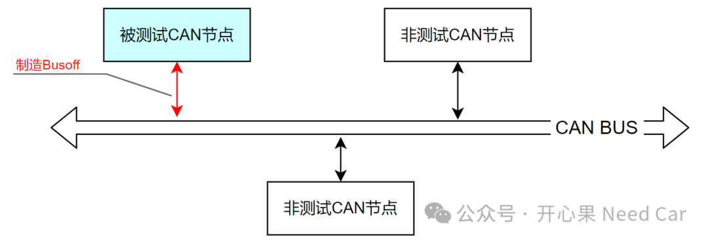

本文聚焦一个工程问题，具体描述：当CAN节点busoff以后，CC（communication controller）无法从busoff状态切换到error active模式，即：busoff无法恢复导致的通信中断。CAN Busoff测试中，制造busoff的同时，保持其他节点的正常通信，发现被测节点busoff以后，无法恢复通信，示意如下：

1、首先让被测CAN节点与非测试CAN节点进行正常通信，非测试节点可以通过仿真器模拟；
3、制造被测试CAN节点的Busoff故障，制造手法：CAN H短地/CAN L短电源/CAN H与CAN L短接/使用干扰仪进行bit干扰；4、当被测试CAN节点Busoff以后，被测试CAN 节点无法恢复正常通信，即：busoff的快恢复机制和慢恢复机制没有起作用。其中，busoff制造期间，非测试CAN节点通信正常进行。
为什么busoff的恢复机制没有起作用呢？是什么因素干扰了busoff恢复？